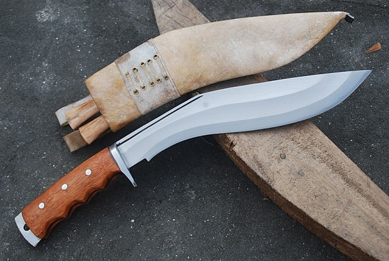
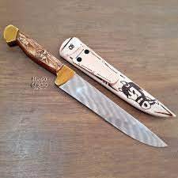

Classic Knives
Kukri
The Kukri Machete is a typical knife of the Gurkhas. It is also an excellent option for the bush machete. Ideal as a survival and/or exploration, camping, hunting, fishing and hiking tool, it is made with a strong and resistant, curved blade with a satin finish, an ergonomic handle and a hole for a lace. Strong, resistant and robust, it is a highly reliable tool. Blade design provides perfect balance for cutting.
Campeira
The Campeira knife is a traditional knife from Brazil. It is widely used because it is useful for cutting the bush and making way in the woods, as well as for hunting and for preparing food.